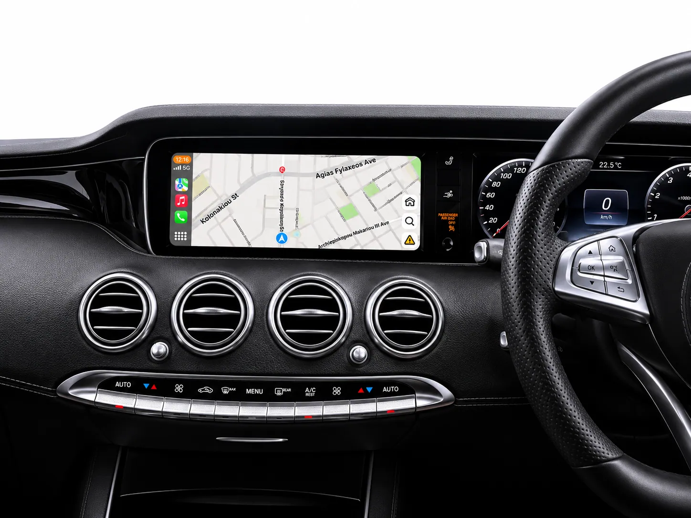

Multimedia upgrade
Mercedes-Benz Multimedia Upgrade
Adding Apple CarPlay and Android Auto to the factory system without replacing the original screen, where technically supported.
Luxury flagship sedan
Mercedes-Benz S-Class


Adding Apple CarPlay and Android Auto to the factory system without replacing the original screen, where technically supported.